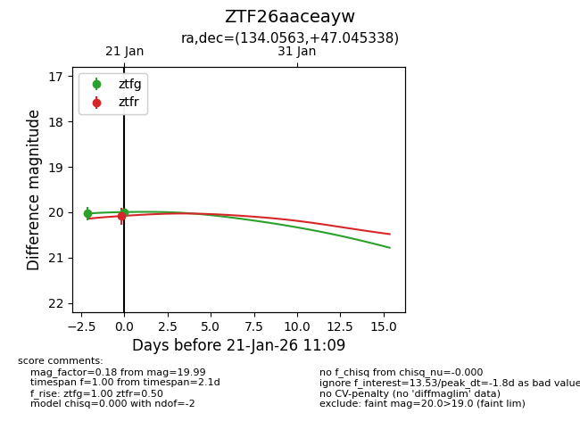
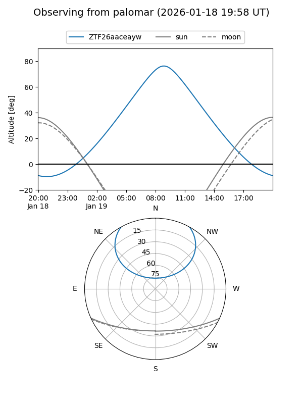
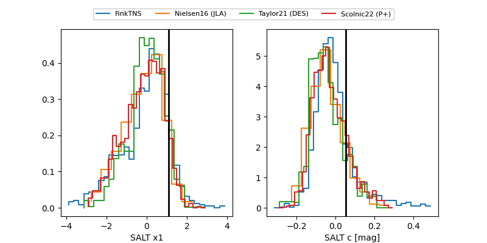

ZTF26aaceayw
Target ZTF26aaceayw at 2026-01-21 08:06
Aliases and brokers:
FINK: link
Lasair: link
ALeRCE: link
alt names
ZTF26aaceayw (ztf,fink_ztf)
Coordinates:
equatorial (ra, dec) = 134.0563,+47.04534
equatorial (HMS+DMS) = 08:56:13.52,+47:02:43.22
galactic (l, b) = (172.8550,+40.38069)
Flags:
Photometry:
last ztfg=20.03, ztfr=20.08
1 ztfg, 1 ztfr detections
Lightcurve

Visibility


Additional plots
